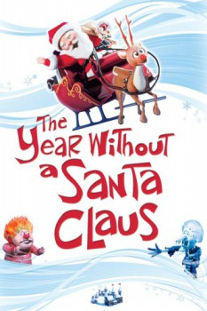

Country:United States, 51 minutes
Spoken languages:English
Genres:Animation, Family, Fantasy
Director(s):Arthur Rankin Jr., Jules Bass
Writer(s):William J. Keenan, Phyllis McGinley
Video Codec:Unknown
Number: 105

Certification:G
Storyline:
Feeling forgotten by the children of the world, old St. Nick decides to skip his gift-giving journey and take a vacation. Mrs. Claus and two spunky little elves, Jingle and Jangle, set out to see to where all the season's cheer has disappeared. Aided by a magical snowfall, they reawaken the spirit of Christmas in children's hearts and put Santa back in action.
Cast:
Shirley Booth (voice of Mrs. Claus), Mickey Rooney (voice of Santa Claus), Dick Shawn (voice of Snow Miser), George S. Irving (voice of Heat Miser), Bob McFadden (voice of Jingle Bells)
Medium: Media file,
Location: D:\$RECYCLE.BIN\$RP4ESGP\The Year Without a Santa Claus.mp4
Loaned: No
Aspect ratio: Unknown